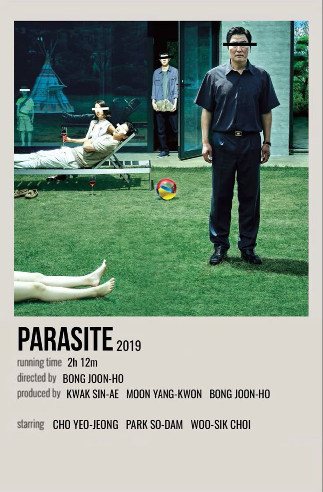

The Godfather
Francis Ford Coppola
DIGITAL COLLECTION
Filmes, diretores e histórias reunidos em um único arquivo.
Explorar coleção →01 — DESTAQUE
1972
Francis Ford Coppola
02 — CRITICALLY ACCLAIMED
Obras reconhecidas por sua direção, roteiro, atuação e impacto na história do cinema.
Francis Ford Coppola

Akira Kurosawa

Sidney Lumet

Bong Joon Ho

Steven Spielberg
03 — ESSENTIALS
Filmes que atravessaram gerações e ajudaram a definir diferentes períodos e estilos do cinema.

Orson Welles
Um marco do cinema americano e uma investigação sobre poder, memória e identidade.

Stanley Kubrick
Uma viagem visual e filosófica sobre humanidade, evolução e inteligência.

Quentin Tarantino
Histórias de crime se cruzam em uma narrativa fragmentada marcada por violência, humor e cultura pop.

Wong Kar-wai
Dois vizinhos desenvolvem uma relação silenciosa enquanto descobrem uma dolorosa conexão entre seus parceiros.
04 — DIRECTORS
Akira Kurosawa
Martin Scorsese
Stanley Kubrick
Wong Kar-wai
Quentin Tarantino
Hayao Miyazaki
05 — ABOUT
Um projeto desenvolvido para explorar desenvolvimento web, banco de dados e experiências digitais através de uma coleção de filmes.